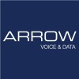

Work History
|
Nov 2016 - Current |
Quest SoftwareQuest provides software solutions to help businesses manage their security and IT environments.Responsibilities:
|
|
May 2012 - Nov 2016 |
Dell Software GroupDell Software Group was a combination of software products acquired by Dell before later being sold to become the stand-alone company Quest.Story:Within Dell moved from doing client pro support to doing Kace software support. Later on Dell acquired Quest and bundled all it's software offering under the banner of Dell Software Group. Later on Dell sold Dell Software Group to Francisco Partners where it was rebranded as Quest. See above for responsibilities. |
 Feb 2011 - May 2012 |
DellDell’s primary business has been with supplying laptops, desktops and servers.Responsibilities:
|
|
Aug 2006 - Feb 2011 |
EnginEngin was a VoIP provider servicing residential and business as well as utilising channel partners.Responsibilities:
|
|
 Apr 2005 - Aug 2006 |
Arrow Voice and DataArrow Voice and Data was a reseller of VoDSL (voice over DSL) and SHDSL (similar to ADSL)Responsibilities:
|
|
Nov 2004 - Apr 2005 |
OzEmailISP providing ADSL and Dialup connectionsResponsibilities:
|
|
May 2004 - Oct 2004 |
AMPAMP is 1 of the big 4 Australian banksResponsibilities:
|
|
Jan 2004 - Apr 2004 |
OptusAt the time Optus was the 2nd largest mobile network in AustraliaResponsibilities:
|
Technical Support
Providing excellent Technical Support is something that I do best. Since 2004 I have been in roles that are all about providing good Technical Support (18 years worth).
In that time I have supported residential customers, business customers and channel partners to help them solve problems and find solutions. I have spoken to many people, gotten to know many people and had a positive impact on those people just as they have had on me. Through the process of troubleshooting I have taught many customers skills that will help them in their careers to solve things. At the same time I have learnt so much from the customers I have interacted with. I have many fond memories of interactions that I have had with so many people in the past. All those interactions that have helped me get to where I am today.
During my working career I have worked in large call centers and also in small support teams. My preference is to work in smaller teams. The reason for this is that in a small team you have a better opportunity to get to know the customers you are dealing with better.
I think reputation is very important when doing technical support. When you put in the hard work to solve customer issues and demonstrate to them that you really do care about them, it can be of great benefit in the long run. Once customers know that you do care about them and the problems that they need to solve it makes working in collaboration to solve an issue a lot easier. For solving really complicated problems great collaboration can often be the key as there can be all sorts of environmental variables still yet to be uncovered. This collaboration though can extend beyond just the customer and for really complicated problems being able to collaborate with your colleagues may sometimes be required. Again having a great working relationship here is valuable. You don't want to have a reputation of somebody who palms off work instead you want to have a reputation of somebody who will try everything they can first and then when they are getting help will use that as an opportunity to learn more while helping a customer. Over the years I have been lucky to collaborate with many employees and have learnt a great deal from many of them.
I think technical support is a great role to be in. You get to learn a wide range of technical skills. You get to interact with many fantastic people. It always feels good helping somebody out of a tough situation. Technical support is all about helping somebody else, but at the end of the day by helping other people you end up learning so much which helps you grow both in knowledge and as a person.
Programming Skills
My primary skill is technical support. However, I have learning how to program for a couple of years now in my spare time. I would not classify myself as a professional coder, however the skills I have picked up may come in useful.
- PHP
- Javascript
- HTML/CSS
Programming Projects
This resume!
2022
I have to be honest. Resumes stress me. So instead of updating my standard resume for this job application
I decided to come up with this resume. As you've hopefully noticed by now it has elements of HTML, CSS and
Javascript all hosted on cloudflare. The code for it can be found on github.
Simple My To Do List
2022
Having just recently felt like I was getting the hang of Javascript, I could see how not having strong types
can be a real problem in Javascript. I decided to look more into Typescript as it seemed very logical the way
that Typescript handles the problems in Javascript. This To Do List was the first thing that I have made in
Typescript. At some point I hope to expand it more, fix some things that could be done better and improve
upon it.
Advent of Code 2021
2021
Advent of code is a puzzle based coding competition. Each day a new puzzle is released to be solved. The puzzles
are made in such a way that you can use any programming language. They usually involve a lot of iteration so
that it makes sense to solve by making a script instead of trying to solve it by hand. This year I used javascript
for my solutions and this was perhaps the best year I had with Advent of Code.
Hack Day π, October 6-8, 2021
2021
This was a Mega hack day and we were told to go big with this 1. I decided to tackle our 2nd most asked for
feature according to our uservoice: https://kace.uservoice.com/forums/82699-sma-k1000 and using http://fabricjs.com/
hacked together a system where users of our products could import in a floor plan and then place objects from their
asset inventory into places or zones. People were so impressed by my presentation on Hack Day that it was voted
Most Innovative Project.
Pushup Competition
2020
Using PHP I coded up a pushup competition. In this competition, once you signed up you would be placed into
a team with other people. Throughout the day whenever you did pushups you would go to the website I created
(hosted on a mac mini at my place) and put in how many did. That would give your team points and when your
team collected enough points your team could move on a grid closer to the finish line. I hope to re-visit this
project again but actually completely re-code it this time using a combination of javascript (perhaps jsnoe)
and other more modern technologies. I have some good game ideas in the future for turning your pushups into
something more exciting.
Hack Day ν: October 8-9, 2020
2020
Kace has the ability to report on it's own data, however it could not do graphs and so customers were using
PowerBi to do create reports with graphs. Using the Javascript libray Raphael I demonstrated a report using
a graph generated by this framework.
Hack Day κ: January 9-10, 2020
2020
For this hackday within Kace I created a favorites toolbar so that users could bookmark their favorite page.
I also created a WYSIWYG token inserter to help people add in tokens (e.g. $senders_email) into their email
templates easier. My project was tied with another project for Best User Experience Project. I am happy to
report that they allowed me to actually refine the code for the WYSIWYG token inserter and now it has been
implemented into our product.
Advent of Code 2019
2019
This was the first year when I attempted to code with Javascript instead of PHP as I felt I needed to improve
upon my Javascript.
Hack Day η: April 11-12, 2019
2019
Inspired by several tickets I had at the time where customers wanted to insert data into their email templates
that did not exist I decided to take this on for Hack Day. In this I hacked together a feature where you could
use a MySQL query to pull the exact data you wanted for your email token. After hack day it was pointed out
to me that while a good project something like this had too high a risk of opening vulnerabilities, but it was
a good learning experience.
Advent of Code 2018
2018
This was my first time participating in Advent of Code. I attempted the puzzles in PHP as this is what I was
most familure with at the time.
Hack Day ε: July 12-13, 2018
2018
This was my first ever hack day project. As a support person I knew it was possible in some situations using Kace
to remotely recover data from a computer even if it's OS was completely broken. As this wasn't an advertised
feature of our product, I created a hack to make it easier to be able to do this.
Penrith Osteopathy Website
A long time ago
Created a website for my parent's business. Originally made in Joomla, later on ported over to WordPress.
Achievements
Nov 2016 -
2019
Toastmasters
Quest provides software solutions to help businesses manage their security and IT environments.- Did something
- Did something else